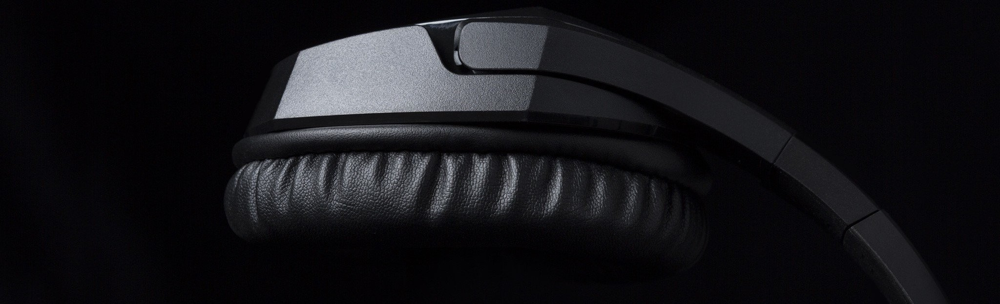
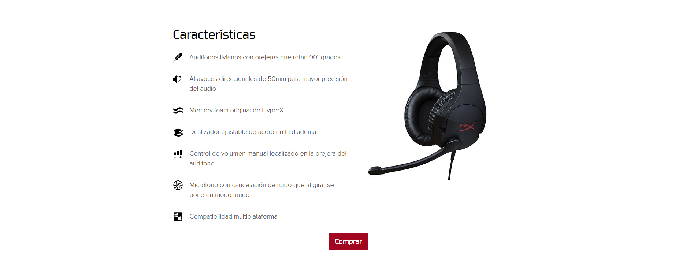
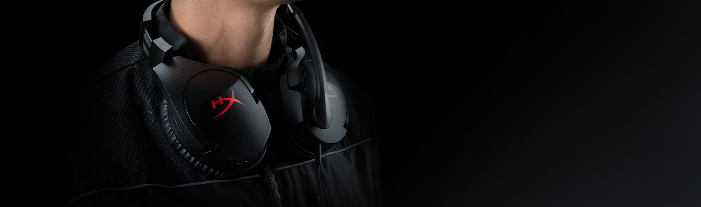
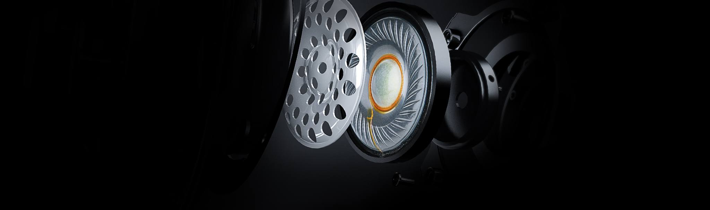
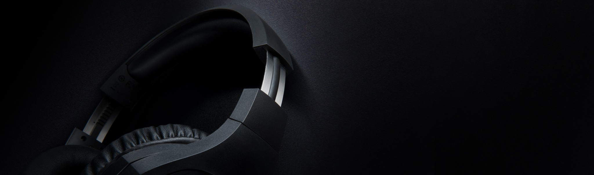
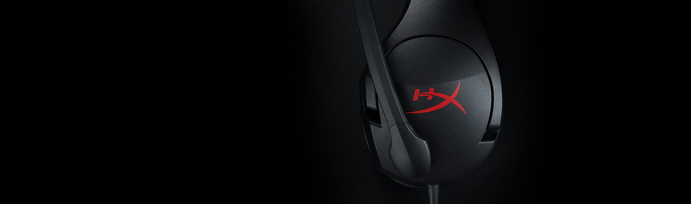

HyperX Cloud Stinger
Los audífonos HyperX Cloud Stinger™ son ideales para gamers que buscan comodidad ligera, calidad de sonido superior y una mayor comodidad. Con solo 275 gramos, resultan cómodos en tu cuello y las orejeras rotan en un ángulo de 90 grados para un mejor ajuste. Sus altavoces direccionales de 50 mm colocan el sonido directamente dentro del oído para una mayor precisión auditiva y una calidad de sonido exclusiva para videojuegos. Para mayor comodidad en sesiones de juego prolongadas, cuenta con memory foam original de HyperX.
Cloud Stinger™
Comodidad ligera. Sonido potente.

Orejeras que rotan 90 grados°
Las orejeras de HyperX Cloud Stinger rotan en un ángulo de 90 grados para adaptarse mejor alrededor de tu cuello, para que puedas jugar cómodamente durante horas.

Comodidad ligera
Con solo 275 gramos, los audífonos HyperX Cloud Stinger no te pesarán, convirtiéndose en el accesorio ideal para sesiones de juego prolongadas.

Altavoces direccionales de 40mm para mayor precisión del audio
Con altavoces de 50mm paralelos a los oídos, el HyperX Cloud Stinger posiciona el sonido directamente a los oídos para una calidad de sonido especialmente diseñada para videojuegos.

Deslizador de acero ajustable
El deslizador ajustable de acero sólido de alta calidad de HyperX Cloud Stinger está construido para una mayor durabilidad y estabilidad.

Micrófono con cancelación de ruido que al girar se pone en modo mudo
Cómodo sistema para silenciar el micrófono girándolo verticalmente contra la cabeza. El sistema incorporado de cancelación de ruido pasivo de HyperX Cloud Stinger reduce el ruido de fondo, brindando una calidad de voz más clara.